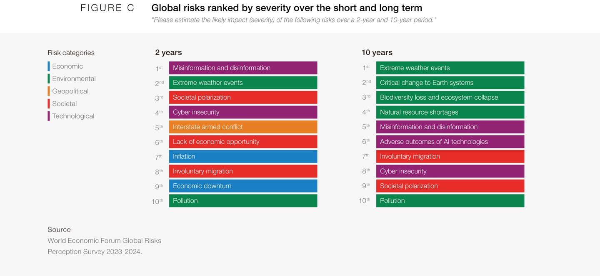
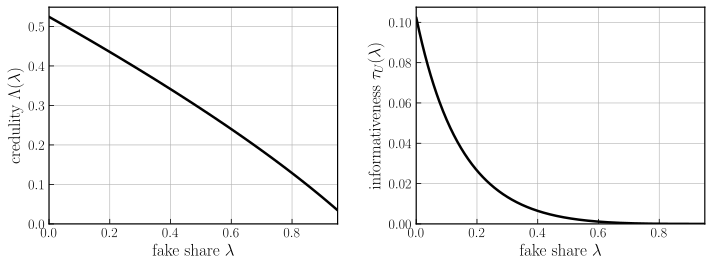
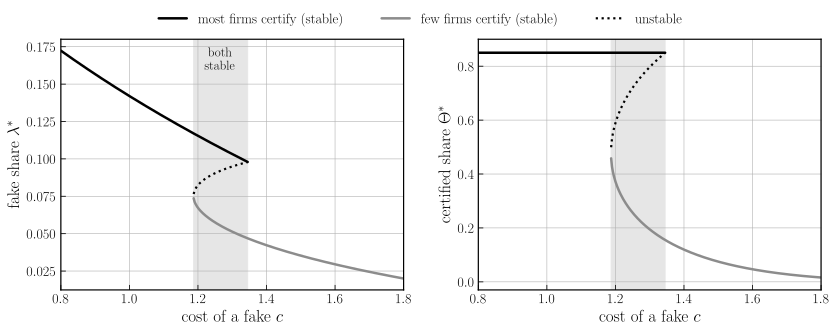

Lorentz Center workshop: Complexity Economics and Behaviour
Talking Their Book
A Theory of Financial Fabrication
Tommaso Di Francesco
University of Bonn
Lorentz Center, Leiden · 28 October 2026
A Top Global Risk

Misinformation: the top global risk for the next two years in 2024, and still second in 2026.
World Economic Forum, Global Risks Report 2024, Figure C; Global Risks Report 2026.
The Perils of Fake News
The damage shows up across fields:
- Politics: pro-Trump fake stories were shared about 30 million times on Facebook before the 2016 election.Allcott and Gentzkow (2017, JEP)
- Health: exposure to COVID-19 vaccine misinformation cut stated intent to vaccinate by about 6 percentage points.Loomba et al. (2021, Nature Human Behaviour)
- Instigation of Violence: in 2016, a man fired a rifle in a Washington pizzeria to “investigate” the Pizzagate conspiracy.United States v. Welch (D.D.C., 2017)
- Spread: on Twitter, false news diffuses six times faster than true news.Vosoughi, Roy and Aral (2018, Science)
But can fake news also move financial markets?
Fake News Can Move Markets
Bloomberg Feed ✔ @BloombergFeed · 22 May 2023
Large Explosion near The Pentagon Complex in Washington D.C. - Initial Report
- A paid "verified" account posing as Bloomberg
- Minutes after the open, the S&P 500 fell about 0.3%
- Quick rebound once officials said there was no explosion
Fake news can move even the most liquid market and with AI they are even easier to produce.
Why Write a Fake?
Usually for money. The writer holds a position and profits when the story moves the price: a pump and dump.
Position
10 Aug 2021 | Buys 282,099 shares of ABVC Biopharma below $4 |
Story
11 Aug, 9:30 | Tweets a $6 target to 267,000 followers |
Trade
9:30–12:25 | Sells into the followers’ buying from $4.09: $68,690 profit |
@Ultra_Calls · 11 Aug 2021, 9:30
$ABVC Long $6+++
The SEC alleges that eight accounts made about $100 million this way.
Allegations in SEC v. Constantin et al. (S.D. Tex., 2022).
Literature and Research Question
Noisy rational expectationsGrossman and Stiglitz (1980); Hellwig (1980); Dávila and Parlatore (2026)
Misinformation and manipulationAllen and Gale (1992); Bénabou and Laroque (1992); Van Bommel (2003); Dugast and Foucault (2018); Kogan, Moskowitz and Niessner (2023); Mignot, Pellizzari and Westerhoff (2024); Gandhi, Hollenbeck and Li (2025)
Disclosure and certificationVerrecchia (1983); Diamond (1985); Admati and Pfleiderer (2000); Mayzlin, Dover and Chevalier (2014)
This paper: a noisy rational-expectations market in which fake news is endogenous. The share of fake news, price informativeness, and certification are determined jointly in equilibrium, as functions of the cost of a fake \(c\).
Research question: what happens to the market when fake news becomes cheaper to produce?
Main Results
- Fabrication limits itself. Fabricators enter only if the price reacts to what they write, and the price reacts less as fake news increases. As fakes get cheaper (\(c \downarrow\)), the fake share stops at a cap.
- Certification moves fabrication onto the firms that stay uncertified, so as fakes get cheaper firms can rush to certify.
- The rush is a coordination failure: prices become more informative, yet welfare falls.
- Policy: catching more fakes can make prices less informative, because firms stop certifying.
Outline
- The Market
- Fabrication
- Certification
- Policy Implications
- Conclusion
- The Market
- Fabrication
- Certification
- Policy Implications
- Conclusion
Investors' Demand
- A unit mass of firms, each with its own market; investors in firm \(i\) trade only its stock.
- Utility over terminal wealth:
\[ U(w_1) = -e^{-a w_1} \]
- Riskless asset with gross return 1, or the stock at price \(p\), paying a liquidating dividend
\[ v \sim \mathcal N(0, \sigma_v^2) \]
Wealth is \(w_1 = w_0 + x\,(v - p)\), so maximising expected utility gives
\[ x \;=\; \frac{\mathbb E(v) - p}{a\,\mathbb V(v)} \]
\(\mathbb E(v)\) and \(\mathbb V(v)\) are conditional on what the investor knows: the news item they read and the price.
Fabricators and Supply
A mass \(N_f\) of atomistic fabricators, each holding a position in every firm:
\[ z_{m} \;=\; \bar z + \zeta_{m}, \qquad \bar z \sim \mathcal N(0,\sigma_z^2) \]
- \(\bar z\): common to all fabricators in the firm (long or short together).
- They unwind their positions at the trading date, and can pay for a story in the direction of the position: good news when long, bad news when short.
Net supply is noise traders, \(u \sim \mathcal N(0,\sigma_u^2)\), plus the positions being unwound:
\[ S \;=\; N_f\,\bar z + u \]
Idiosyncratic \(\zeta_m\) cancels in aggregate. Without stories, fabricators are just noise traders.
News
Each investor reads one item about the stock:
\[ s_j = \begin{cases} v + \varepsilon_j & \text{genuine, prob. } 1-\lambda \\ \phi\,\bar z + e_j & \text{fabricated, prob. } \lambda \end{cases} \]
- A genuine item is a noisy report of the dividend.
- A fake follows the position (\(\phi > 0\)) and carries no information about \(v\).
- The investor does not know which kind they drew.Pennycook and Rand (2019, Cognition); Assenza, Cardaci and Huber (2024)
For now \(\lambda\) is a parameter; it is determined in equilibrium later.
Variance matching
\[ \phi^2\sigma_z^2 + \sigma_e^2 \;=\; \sigma_v^2 + \sigma_\varepsilon^2 \]
Fakes and genuine items have the same variance, so the size of an item says nothing about its source. Given the noise in fakes, this pins down \(\phi\).
Circulating Content
Averaging items across investors removes everything idiosyncratic:
\[ M \;\equiv\; \int_0^1 s_j\,dj \;=\; (1-\lambda)\,v \;+\; \lambda\,\phi\,\bar z \]
- Genuine readers contribute the dividend; fake readers contribute the position.
- Aggregate demand depends on the items only through \(M\): each investor’s noise cancels when demands are added up.
Beliefs and Price Conjecture
1. Conjecture a price linear in the aggregate shocks:
\[ \begin{aligned} p &= A_v\,v + A_z\,\bar z + A_u\,u \\ &= A_v\,\pi \end{aligned} \]
with \(\pi \equiv v + g\,\bar z - h\,u\): the price in units of the dividend.
2. Beliefs: best linear predictor of \(v\) given item and price:
\[ \mathbb E_j(v) = b_s\,s_j + b_\pi\,\pi \]
\(\mathbb V(v)\) is the forecast-error variance, the same for every investor.
3. Market clearing: average demand equals supply,
\[ \frac{b_s M + b_\pi \pi - p}{a\,\mathbb V(v)} \;=\; N_f\,\bar z + u , \]
which pins \(A_v, g, h\) and verifies the conjecture.
Equilibrium Price
Market clearing gives a price linear in the shocks:
\[ p = A_v\left(v + g\,\bar z - h\,u\right) \]
- The loading on noise, \(h\), rises with \(\lambda\): as items get polluted, investors trade less on them and noise moves the price more.
- With no fakes (\(\lambda = 0\)) this is the Hellwig (1980) price.
The loading on the common position has two parts:
\[ g \;=\; \frac{1}{1-\lambda}\Big(\underbrace{\lambda\,\phi}_{\text{stories}} \;-\; \underbrace{N_f\,a \mathbb V(v)/b_s}_{\text{unwinding}}\Big) \]
A long position raises the price through the stories written for it and lowers it through the shares being sold.
Credulity and Informativeness
Rewrite the equilibrium price in terms of content and net supply:
\[ p \;=\; \Lambda\,M \;-\; A_v h\,S \]
Credulity
\[ \Lambda \;\equiv\; \frac{\partial p}{\partial M}\Big|_{S} \;=\; \frac{A_v}{1-\lambda} \]
How far the price moves per unit of circulating content. It sets what a fake news earns.
Informativeness
\[ \tau \;\equiv\; \frac{1}{g^2\sigma_z^2 + h^2\sigma_u^2} \]
How precisely the price reveals \(v\): one over the variance of the noise in \(\pi = v + \text{noise}\).
Solving the Market
Solving the market’s fixed point for each \(\lambda\) gives:

Credulity \(\Lambda(\lambda)\): sets what a fake news earns.
Informativeness \(\tau_U(\lambda)\): what an uncertified price reveals.
- The Market
- Fabrication
- Certification
- Policy Implications
- Conclusion
Fabricators' Entry
So far the fake share \(\lambda\) was a parameter. Now it comes from who chooses to write.
| What an item earns |
\[ W(\lambda) \;=\; \mathbb E\bigg[\,\underbrace{N_f\bar z}_{\text{shares unwound}}\cdot\underbrace{\Lambda\,\frac{\partial M}{\partial n}}_{\text{price move}}\Bigg] \;=\; \underbrace{N_f\sigma_z^2\,\phi}_{\text{position}\,\times\,\text{story}}\;\underbrace{\Lambda(\lambda)}_{\text{credulity}}\;\underbrace{(1-\lambda)^2}_{\text{dilution}} \]
|
| Who writes |
\[ W(\lambda) - q\chi \;\ge\; c\,a_m \]
\(c\): cost of a fake; writer’s cost type \(a_m \sim H_0\); a fake is caught with probability \(q\) and fined \(\chi\). |
| Fixed point |
\[ F(\lambda) = N_f\,H_0\!\left(\frac{W(\lambda) - q\chi}{c}\right), \qquad \lambda \;=\; \Psi(\lambda) \equiv \frac{F(\lambda)}{F(\lambda) + 1} \]
|
Fabrication Limits Itself
More fakes → investors discount unverified news more → each item earns less → fewer writers enter.
Proposition 1
As long as fakes do not track the position too closely and prices are not too precise, the fake share \(\lambda^*\) is unique and decreasing in \(c\). It is positive iff
\[ c \;<\; c_{\max} = \frac{W(0) - q\chi}{a_{\min}} . \]
Enforcement shifts the threshold, but the limit comes from investors' scepticism.
Cheap Fakes Hit a Ceiling
As fakes become free, everyone writes whose item is worth more than its expected penalty. Entry stops at
\[ W(\bar\lambda) = q\chi \]
The ceiling depends on credulity and enforcement, not on the cost of a fake.
- The Market
- Fabrication
- Certification
- Policy Implications
- Conclusion
Certification
A firm can invest so that fakes about it are recognised fast: monitoring, a verified channel, rapid denials.
- A certified item carries a label, so its market has no fakes:
\[ \tau_C = \frac{(\tau_\varepsilon/a)^2}{\mathrm{Var}(S)} \]
- An uncertified firm gets \(\tau_U(\lambda) < \tau_C\): fewer investors trade on genuine news, and all of them trade more cautiously.
Firm \(i\) values informativeness at \(\beta_i\) and certifies iff the gain covers the verification cost, normalised to 1:
\[ \beta_i\,\big(\tau_C - \tau_U(\lambda)\big) \;\ge\; 1 \]
So the certified share \(\Theta\) rises with the fake share.
Certification Displaces Fakes
- A fake about a certified firm is known to be fake and moves nothing.
- So the \(F\) fakes go to the \(1-\Theta\) uncertified firms: each gets \(F/(1-\Theta)\) units of fakes per unit of genuine news.
\[ \lambda \;=\; \frac{F/(1-\Theta)}{F/(1-\Theta) + 1} \;=\; \frac{F}{F + (1-\Theta)} \]
Certification takes a firm’s genuine news out of the pool and leaves the fakes in: the fake share faced by the rest rises with \(\Theta\).
This widens the gap and draws more firms into certification.
A Rush to Certify

Proposition 3. For every \(c\) in a band, two stable equilibria coexist: few firms certify and few fakes circulate, or most certify and the pool left behind is polluted. As fakes get cheaper, the few-certify equilibrium disappears at the bottom of the band and firms rush to certify.
A Coordination Failure
- As fakes get cheaper, firms rush to certify: the certified share jumps from 45% to 85%.
- Prices become more informative, but the certification bill rises by more: welfare falls.
- Each firm certifies to escape a pool that is polluted because other firms have certified.
\[ \mathcal W \;=\; \underbrace{\int_0^1 \beta_i\,\tau_i\,di}_{\text{value of informative prices}} \;-\; \underbrace{\Theta}_{\text{certification bill}} \;-\; \underbrace{\text{cost of writing fakes}}_{\text{resources used by fabricators}} \]
- The Market
- Fabrication
- Certification
- Policy Implications
- Conclusion
Detection Can Lower Informativeness
- Fabrication always falls.
- Cleaner unverified news narrows the gap: firms stop certifying.
- Informativeness falls when enough firms stop certifying; welfare still rises.
- Disgorgement gets there with less detection.
- The Market
- Fabrication
- Certification
- Policy Implications
- Conclusion
Conclusion
Back to the question: what happens as fakes get cheaper?
- Fake news rises, but levels off: investors grow sceptical, so each fake news earns less.
- Prices become less informative wherever news cannot be verified.
- Firms pay to be believed, and the fakes pile onto those that cannot.
References
- Admati, A. R. and P. Pfleiderer (2000). Forcing Firms to Talk: Financial Disclosure Regulation and Externalities. Review of Financial Studies 13(3), 479–519.
- Allcott, H. and M. Gentzkow (2017). Social Media and Fake News in the 2016 Election. Journal of Economic Perspectives 31(2), 211–236.
- Allen, F. and D. Gale (1992). Stock-Price Manipulation. Review of Financial Studies 5(3), 503–529.
- Assenza, T., A. Cardaci and S. J. Huber (2024). Fake News: Susceptibility, Awareness and Solutions. TSE Working Paper 24-1519.
- Bénabou, R. and G. Laroque (1992). Using Privileged Information to Manipulate Markets: Insiders, Gurus, and Credibility. Quarterly Journal of Economics 107(3), 921–958.
- Bond, P., A. Edmans and I. Goldstein (2012). The Real Effects of Financial Markets. Annual Review of Financial Economics 4, 339–360.
- Dávila, E. and C. Parlatore (2026). Identifying Price Informativeness. Review of Financial Studies 39(5), 1267–1309.
- Diamond, D. W. (1985). Optimal Release of Information by Firms. Journal of Finance 40(4), 1071–1094.
- Dugast, J. and T. Foucault (2018). Data Abundance and Asset Price Informativeness. Journal of Financial Economics 130(2), 367–391.
- Gandhi, A., B. Hollenbeck and Z. Li (2025). Misinformation and Mistrust: The Equilibrium Effects of Fake Reviews on Amazon.com. NBER Working Paper 34161.
- Grossman, S. J. and J. E. Stiglitz (1980). On the Impossibility of Informationally Efficient Markets. American Economic Review 70(3), 393–408.
- Hellwig, M. F. (1980). On the Aggregation of Information in Competitive Markets. Journal of Economic Theory 22(3), 477–498.
- Kogan, S., T. J. Moskowitz and M. Niessner (2023). Social Media and Financial News Manipulation. Review of Finance 27(4), 1229–1268.
- Loomba, S., A. de Figueiredo, S. J. Piatek, K. de Graaf and H. J. Larson (2021). Measuring the Impact of COVID-19 Vaccine Misinformation on Vaccination Intent in the UK and USA. Nature Human Behaviour 5(3), 337–348.
- Mayzlin, D., Y. Dover and J. Chevalier (2014). Promotional Reviews: An Empirical Investigation of Online Review Manipulation. American Economic Review 104(8), 2421–2455.
- Mignot, S., P. Pellizzari and F. Westerhoff (2024). Fake News and Asset Price Dynamics. Jahrbücher für Nationalökonomie und Statistik 244(4), 351–379.
- Pennycook, G. and D. G. Rand (2019). Lazy, Not Biased: Susceptibility to Partisan Fake News Is Better Explained by Lack of Reasoning than by Motivated Reasoning. Cognition 188, 39–50.
- Townsend, R. M. (1979). Optimal Contracts and Competitive Markets with Costly State Verification. Journal of Economic Theory 21(2), 265–293.
- Van Bommel, J. (2003). Rumors. Journal of Finance 58(4), 1499–1520.
- Verrecchia, R. E. (1983). Discretionary Disclosure. Journal of Accounting and Economics 5, 179–194.
- Vosoughi, S., D. Roy and S. Aral (2018). The Spread of True and False News Online. Science 359(6380), 1146–1151.
Other sources
- SEC v. Constantin et al., No. 4:22-cv-04306 (S.D. Tex., filed 13 Dec 2022).
- United States v. Welch (D.D.C., 2017).
- World Economic Forum, Global Risks Report, 2024, 2025 and 2026 editions.
- OpenAI API pricing (GPT-4, 2023; GPT-4o mini, 2024).
Other cases
| Case | What happened |
|---|
| Telegram pump groups | An organiser buys a microcap, members post "buy now", the group sells into the buying |
| Lidingo (SEC 2017) | Paid, undisclosed articles about small firms; run-up, then reversal |
| IDT, Fitbit (2016 filings) | Fake filings on EDGAR; options bought just before |
| Citron (2024) | Public long and short calls, quickly reversed (alleged) |
Timing
\(t = 0^-\): decisions
Writers observe their cost type and decide whether to write. Firms decide whether to certify.
\(t = 0\): trading
Certified items carry a label; uncertified items pool. Each investor reads one item, sees the price, trades. Positions are unwound.
\(t = 1\): verification
The dividend is paid. Each fake is detected with probability \(q\); its writer pays \(\chi\).
Items pool at the trading date, as in the first trading round of Dugast and Foucault (2018); costly verification as in Townsend (1979).
Forecast Weights
Minimise \(\mathbb E[(v - b_s s - b_\pi \pi)^2]\). The error is uncorrelated with each signal:
\[ \begin{aligned} \mathrm{Cov}(v,s) &= b_s\,\mathrm{Var}(s) + b_\pi\,\mathrm{Cov}(s,\pi) \\ \mathrm{Cov}(v,\pi) &= b_s\,\mathrm{Cov}(s,\pi) + b_\pi\,\mathrm{Var}(\pi) \end{aligned} \]
No fakes (\(\lambda = 0\)): \(b_s = \dfrac{\tau_\varepsilon}{\tau_v + \tau_\varepsilon + \tau}\), \(b_\pi = \dfrac{\tau}{\tau_v + \tau_\varepsilon + \tau}\), as in Hellwig.
| Moment | Value |
|---|
| \(\mathrm{Var}(s)\) | \(\sigma_v^2 + \sigma_\varepsilon^2\) |
| \(\mathrm{Cov}(v,s)\) | \((1-\lambda)\,\sigma_v^2\) |
| \(\mathrm{Var}(\pi)\) | \(\sigma_v^2 + g^2\sigma_z^2 + h^2\sigma_u^2\) |
| \(\mathrm{Cov}(v,\pi)\) | \(\sigma_v^2\) |
| \(\mathrm{Cov}(s,\pi)\) | \((1-\lambda)\,\sigma_v^2 + \lambda\phi g\,\sigma_z^2\) |
The last term is new: fakes and the price share \(\bar z\).
\[ b_s = \frac{\sigma_v^2\big[(1-\lambda)\sigma_n^2 - \sigma_{sn}\big]}{\det}, \qquad b_\pi = \frac{\sigma_v^2\big[\sigma_{s|v}^2 - (1-\lambda)\sigma_{sn}\big]}{\det}, \qquad \sigma_{sn} = \lambda\phi g\,\sigma_z^2 \]
\(\det = \mathrm{Var}(s)\mathrm{Var}(\pi) - \mathrm{Cov}(s,\pi)^2\), \(\;\sigma_{s|v}^2 = \sigma_y^2 - (1-\lambda)^2\sigma_v^2\). The weights depend on \(g, h\), which depend on the weights given the fixed point.
The Cubic
With \(\omega \equiv a\,\mathbb V(v)/b_s\), \(g\) and \(h\) are explicit in \(\omega\), and the projection gives one cubic equation:
\[ (1-\lambda)\,\omega^2\left(\sigma_w^2\,\omega - N_f\lambda\phi\,\sigma_z^2\right) \;=\; a\left[\sigma_{s|v}^2\,\sigma_u^2\,\omega^2 + \sigma_{s|M}^2\,\sigma_z^2\left(N_f \omega - \lambda\phi\right)^2\right] \]
- \(\sigma_{s|v}^2 = \sigma_y^2 - (1-\lambda)^2\sigma_v^2\), \(\sigma_{s|M}^2 = \sigma_y^2 - \mathrm{Var}(M)\), \(\sigma_w^2 = \sigma_u^2 + N_f^2\sigma_z^2\).
- At \(\lambda = 0\): \(\omega = a\sigma_\varepsilon^2\) and \(\tau_C = \tau_\varepsilon^2/(a^2\sigma_w^2)\), as in Hellwig (1980).
Lemma 1
Credulity has two channels:
\[ \Lambda(\lambda) \;=\; \underbrace{\frac{(1-\lambda)\,\sigma_v^2}{\sigma_y^2}}_{\text{own item: always falls}} \;+\; \underbrace{\frac{R_\pi(\lambda)}{\sigma_v^2(1-\lambda)}}_{\text{price: can rise}} \]
- The price channel can win when prices are nearly fully revealing (investors barely use their item), or when fakes are so adversarial that the price reveals the position behind them and investors strip them out.
- The condition \(Q > 0\) at \(\lambda = 0\) rules out both: prices noisy enough, fakes not see-through. Then credulity falls with \(\lambda\).
The fee and entry
- With \(n\) fakes about a firm, its fake share is \(\lambda = n/(n+1)\), and fakes raise its price by \(\Lambda\lambda\phi\bar z\). Holders unwind \(N_f\bar z\), so the sponsor gains \(N_f\Lambda\lambda\phi\sigma_z^2\) and values one more item at
\[ W(\lambda) = N_f\sigma_z^2\,\phi\,\Lambda(\lambda)\,(1-\lambda)^2 . \]
- Writer \(m\), with cost \(c a_m\), enters iff \(W(\lambda) - q\chi \ge c a_m\); the mass written is \(F = N_f H_0(\bar a)\).
- Shutdown threshold: \(c_{\max} = [W(0) - q\chi]/a_{\min}\).
Distributions and Parameters
| Object | Distribution | Values in the illustrations |
|---|
| Dividend, news noise: \(v,\ \varepsilon\) | Normal, mean 0, independent | \(\sigma_v^2 = \sigma_\varepsilon^2 = 1\) |
| Positions: \(\bar z,\ \zeta\) | Normal, mean 0; \(\bar z\) common to a firm’s fabricators | \(\sigma_z^2 = 1,\ \sigma_\zeta^2 = 0\) |
| Noise supply, fake noise: \(u,\ e\) | Normal, mean 0; \(\sigma_e^2\) set by variance matching | \(\sigma_u^2 = 1\) |
| Writers’ cost types \(a_m\) | \(H_0\) uniform on \([a_{\min}, a_{\max}]\) | \(U[0.2,\ 3.0]\) |
| Certification benefit \(\beta_i\) | Pareto: \(\Pr(\beta_i \ge x) = (B/x)^\alpha,\ x \ge B\); a share \(1-\Theta_{\max}\) cannot certify, so \(\Theta = \Theta_{\max}\min\{1, (B\Delta)^\alpha\}\) | \(\alpha = 3,\ B = 20,\ \Theta_{\max} = 0.85\) |
| Other | Risk aversion; adversarialness; mass of fabricators; detection; penalty | \(a = 2,\ \phi = 1,\ N_f = 1.2,\ q = 0.3,\ \chi = 0.5\) |
- Normality matters only through second moments: beliefs are best linear predictors.
- \(H_0\): self-limitation and the ceiling hold for any continuous \(H_0\); \(c_{\max}\) depends only on \(a_{\min}\).
- \(\beta_i\): the rush needs take-up elastic enough (proved in the step limit, \(\alpha \to \infty\)); it is absent at \(B = 12\) and present at \(B = 20\).
Policy at a Glance
| Instrument | Fakes | Informativeness | Welfare |
|---|
| Better detection, fixed fine | ↓ always | ↓ possible | ↑ |
| Disgorgement (claw back the gain) | ↓ faster | ↓ possible | ↑ faster |
| Costlier fakes (provenance, watermarks) | ↓ | ↑ | ↑ small |
| Cheaper verification | ↓ | ↑ | ↑ large |
| Certification subsidy or mandate | ↑ on firms that stay | ↑ | ↓ |
Informativeness and welfare can move in opposite directions: informativeness ignores what certification costs.
Two Cost Levers
Raise the cost of fakes (provenance, watermarking) or lower the cost of verification (faster, cheaper certified disclosure):
- Both lower the fake share by the same amount when certification is at its cap.
- Only cheaper verification also cuts the certification bill, so it raises welfare several times as much.
Subsidies and mandates backfire
The market already over-certifies: each firm that certifies pushes fakes onto the firms that stay. A subsidy can tip the economy into the rush, raising informativeness and lowering welfare.
Lower the cost of verification rather than subsidise certification.
Welfare
\[ \mathcal W \;=\; \int_0^1 \beta_i\,\tau_i\,di \;-\; \underbrace{\Theta}_{\text{certification bill}} \;-\; \underbrace{c N_f\!\int_{a_{\min}}^{\bar a} a\, dH_0(a)}_{\text{resources spent writing}} \]
- Allocative efficiency through prices, motivated by the real effects of prices (Bond, Edmans and Goldstein 2012); penalties and trading losses are transfers.
- Fakes carry no information, so the first best has no fabrication. The second-best question takes free entry as given.